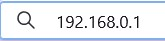
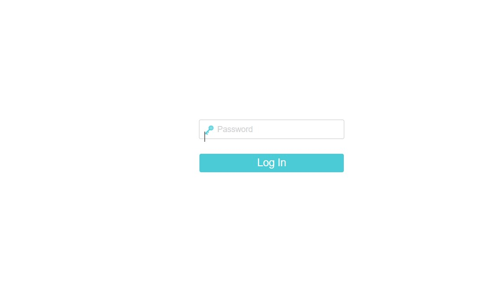
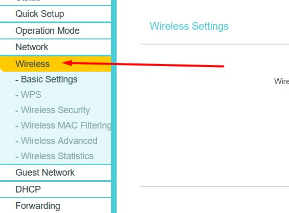
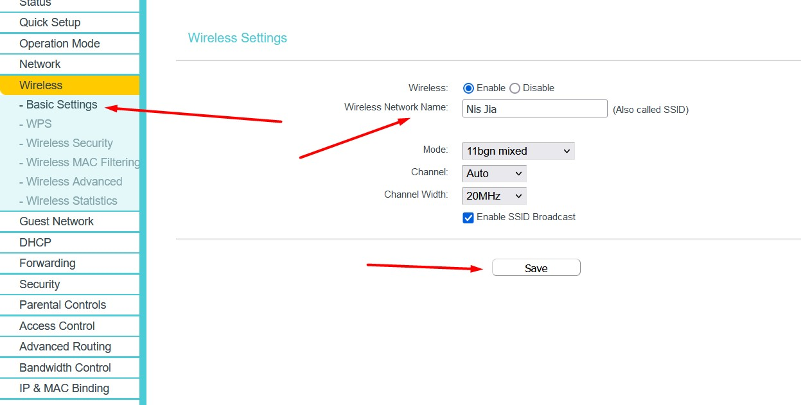
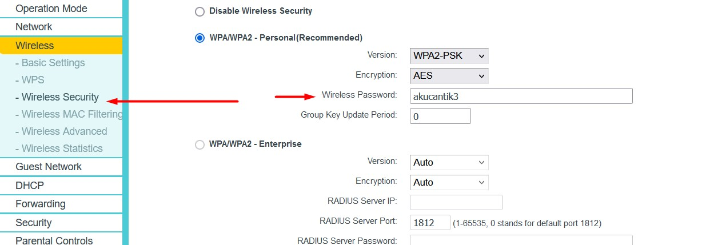

Pendahuluan
Mengganti password Wi-Fi dan SSID secara berkala penting untuk menjaga keamanan jaringan Anda. Dalam tutorial ini, Anda akan belajar cara login ke modem, mengubah SSID (nama jaringan Wi-Fi), serta mengganti password Wi-Fi Anda.
Mengganti password Wi-Fi dan SSID secara berkala penting untuk menjaga keamanan jaringan Anda. Dalam tutorial ini, Anda akan belajar cara login ke modem, mengubah SSID (nama jaringan Wi-Fi), serta mengganti password Wi-Fi Anda.
Ikuti langkah-langkah berikut untuk login ke modem atau router Anda:


Setelah login, ikuti langkah-langkah ini:


Langkah-langkah mengganti password Wi-Fi:

Beberapa modem perlu direstart agar perubahan diterapkan. Bisa lewat menu modem atau dengan mematikan dan menyalakan perangkat.
Anda telah berhasil mengganti SSID dan password Wi-Fi. Catat perubahan agar tidak lupa.
JIKA SETELAH GANTI PASSWORD TIDAK BISA, COBA LUPAKAN WIFINYA TERLEBIH DAHULU